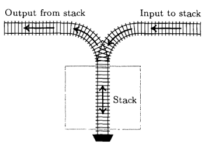
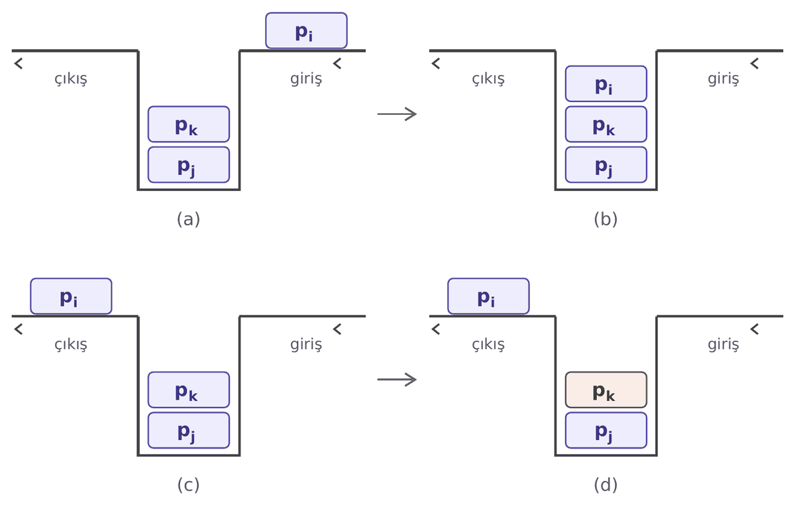
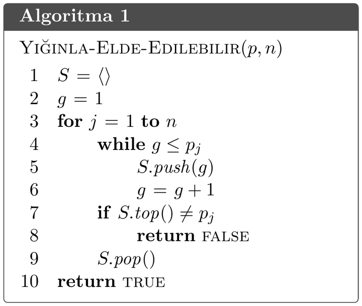

Knuth'un Kitabından Bir Soru (I) yazısında 1,2,3,4,\dots,n olarak numaralandırılmış vagonların yığın kullanılarak kaç farklı şekilde çıkış bölgesinde sıralanabileceğini bulmuştuk. Bu yazıda ise bir sıralamanın yığın kullanılarak elde edilebilmesi için gerek ve yeter koşulu vereceğiz.
Problem
Bir demiryolu hattının giriş tarafında, soldan sağa doğru sıralanmış ve 1,2,3,4,\dots,n olarak numaralandırılmış n vagon bulunduğunu düşünelim. Vagonlar yalnızca belirtilen yönlerde hareket edebilir ve birbirlerinin üzerinden atlayamaz. Vagonların çıkışa taşınması stack (yığın) işlemleri kullanılarak gerçekleştirilir:
- Push: Giriş bölgesinin en önündeki vagonu yığın bölgesine hareket ettir.
- Pop: Yığının en üstündeki vagonu çıkışa doğru hareket ettir.

Buna göre, çıkış bölgesinde p_1p_2\dots p_n permütasyonunun elde edilmesi için gerek ve yeter koşul i<j<k olup p_j<p_k<p_i sağlayan indislerin bulunmamasıdır, kanıtlayın.
Çözüm
Önce gerekliliği kanıtlayalım. Çelişki elde etmek için p_1p_2\dots p_n permütasyonunun yığın kullanılarak elde edilebildiğini ve i<j<k olup p_j<p_k<p_i sağlayan indislerin bulunduğunu varsayalım.
Vagonlar birbirleri üzerinden atlayamadığı için küçük numaralı vagon büyük numaralı vagondan önce yığına girer. Dolayısıyla, önce p_j, sonra p_k, en son p_i yığına girer. Şimdi p_i'nin çıkış bölgesine taşındığı anı düşünelim. j,k>i olduğundan p_j ve p_k çıkışta p_i'den sonra yer alır. Bu anda p_j ve p_k hâlâ yığındadır ve p_j, yığına daha önce girdiği için p_k'nın altındadır.
Öte yandan j<k olduğundan p_j, p_k'den önce çıkışa taşınmalıdır. Fakat yığından yalnızca en üstteki vagon çıkabilir ve p_k, p_j'nin üstündedir. Bu bir çelişkidir. Dolayısıyla yığın kullanılarak elde edilebilen bir permütasyonda i<j<k olup p_j<p_k<p_i sağlayan indisler bulunamaz.

Şimdi yeterliliği kanıtlayalım. Kanıtı karşıt ters yöntemi ile yapacağız. Kanıtlamak istediğimiz önerme, p_1p_2\dots p_n permütasyonunda i<j<k olup p_j<p_k<p_i eşitsizliğini sağlayan indisler bulunmuyorsa, bu permütasyonun çıkış bölgesinde yığın işlemleri ile elde edilebilir olduğudur. Mantık kuralları gereği bu önerme, “bir permütasyon yığın tarafından elde edilemiyorsa, o permütasyonda i<j<k olup p_j<p_k<p_i sağlayan indisler bulunur” önermesine denktir. Kanıtımıza bu denkliği kullanarak devam edeceğiz.
Karşıt tersi kanıtlamak için, verilen bir p_1p_2\dots p_n permütasyonunun yığın işlemleriyle elde edilip edilemeyeceğine karar veren Algoritma 1'i inceleyelim.

Bu algoritma her j pozisyonu için önce giriş bölgesinden p_j'ye kadar olan vagonları yığına taşır. Eğer p_j vagonu giriş bölgesinde değilse önceden yığına taşınmıştır ve while döngüsü bir şey yapmaz. Daha sonra yığının en üstündeki vagon p_j ise onu çıkışa götürür. Ancak eğer p_j yığının tepesinde değilse yığında onun üstünde en az bir vagon daha vardır ve algoritma False döndürür. Bu yöntemle her iterasyonda hedef vagonu yığından çıkışa taşıyabiliyorsak bu permütasyon elde edilebilir.
Örneğin n=4 ve 4312 permütasyonu için algoritmayı uygulayalım. İlk iterasyonda hedef vagonumuz 4 olduğu için tüm vagonları yığına taşırız. Yığının tepesindeki vagon 4 olduğu için onu çıkışa taşırız. Şu an hedef vagonumuz 3 ve zaten yığının tepesinde olduğu için onu da çıkışa taşıyabiliriz. Sıradaki hedef 1 ve zaten yığında ancak yığının tepesinde 2 olduğu için bu permütasyon yığınla elde edilemez.
Şimdi teoremin kanıtına geri dönelim ve p_1p_2\dots p_n permütasyonunun yığınla elde edilemediğini varsayalım. Bu durumda Algoritma 1 True döndüremez, çünkü True döndürdüğünde permütasyonu elde etmiş olur. Yani p_1p_2\dots p_n için Algoritma 1 False döndürür. Yeterliliğin karşıt tersini göstermek için p_1p_2\dots p_n permütasyonunda i<j<k olup p_j<p_k<p_i sağlayan indisler bulacağız.
Algoritma 1 False döndürdüğü için öyle bir j adımı vardır ki o adımda p_j yığındadır ve yığının tepesinde p_j'den farklı bir vagon vardır. O vagon x olsun. Vagonlar yığına artan sırayla girdiği için yığın tepeden aşağıya doğru monoton azalandır ve x>p_j'dir. Ayrıca x, j. adımda çıkışta olmadığı için x \notin \{p_1,p_2,\dots,p_{j-1}\} olur. Dolayısıyla permütasyonda x, p_j'den sonra yer alır. Yani eğer x, permütasyonun k. sırasındaysa j<k olur.
Şimdi p_i = \max\{p_1,p_2,\dots,p_{j-1}\} olsun. Algoritma ilk adımda durmadığı için j \ge 2'dir ve görüldüğü üzere i<j'dir. Eğer p_i'nin p_k'den büyük olduğunu kanıtlarsak kanıtımız bitmiş olacak. Çelişki elde etmek için p_i'nin p_k'den küçük olduğunu varsayalım. p_i<p_j durumunu ve p_j<p_i durumunu ayrı ayrı inceleyelim. İlk j-1 adımda yalnızca p_i'ye kadar olan vagonlar yığına taşınır. Eğer p_i<p_j ise (j-1). adımda p_j hâlâ giriş bölgesindedir, j. adımda yığına taşınır ve en üstte olur. Bu, algoritmanın j. adımda durmasıyla çelişir. Eğer p_j<p_i ise j. adımda yığına yeni vagon taşınmaz ve p_k, p_i'den büyük olduğu için yığında bulunmaz. Bu da j. adımda p_k'nin yığının en üstünde olmasıyla çelişir. Dolayısıyla p_i>p_k olur. Böylece i<j<k olup p_j<p_k<p_i sağlayan indisler bulduk ve kanıtı tamamladık.∎
Kaynakça
- D. E. Knuth, The Art of Computer Programming, Cilt 1: Fundamental Algorithms, 3. baskı, Addison-Wesley, 1997, Bölüm 2.2.1, Alıştırma 5.
Yorumlar
Beğenmek ya da yorum yazmak için GitHub hesabıyla giriş yapmanız gerekir.